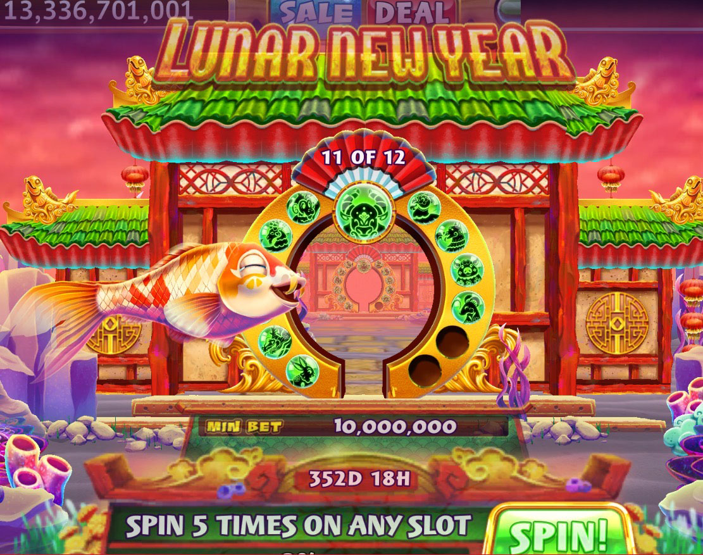

Problem
Gold Fish Casino rings the most engaging and thrilling casino and casual mobile social games to audiences wide world. However, for the past couple of months they has been experiencing decreased player retention and decreased player engagement.
Solution
Potentially incorporating an quest within the casino slots which would celebrate Lunar New Year would not only introduce a new character, but would also target key performance indicators, such as player retention, increase player bets, increase the amount of % spinning for player, and increase SPSU (spins per spinning player).
User Personas
When creating this quest, I wanted to take a look at the player personas/ demographics. These were crucial to understanding why player activity was down and how this quest can increase those two factors.

Additionally, taking a look at each players core motivation will also aide in which specific demographic this quest will target. For example, with this quest the main core motivation targeted will most likely be Profit. Profit core motivation gives the user a feeling of gaining money, and wanting to get rich and win prizes. With that being said, Mike Money will get a high take away than say Sensation Serena who has a core motivation of Glory. Glory core motivation gives the player a feeling of importance and glamor. The player enjoys challenges and wanting others to envy their gaming abilities and success.

User Flow
Next, I mapped out a simple player flow that showcased the first time player experience. Meaning, right when the player opens the app and enters the lobby a popup for the Lunar New Quest will activate prompting the user to enter a slot, to the player entering a slot and spinning, to completing a task and completing a node etc.

Pivoting away from primary research. It was time to collaborate with the art team to come up with a concept for Lunar New Year. There were multiple themes and concepts needed to be covered in this quest. First, was brainstorming with to plan out the progression of the torii gate as the player greated each Zodiac animal.
Then, once the torii gate was sketched out, it was time to concept out the new koifish character for this quest. There were multiple color variations that were concepted with this character, but after a round of usability testing within different team departments, koifish number 5 was the better fit.

TEXTTEXTTEXTTEXTTEXTTEXTTEXTTEXT
TEXT TEXT TEXT TEXT TEXT TEXT
After analyzing demographics, core motivators, and mapping out a user flow it was time to create a low fidelity mockup of the quest.


Once the final brand art concepts were polished and put together, it was now time to add a more realistic feel to the quest and build a high fidlity mockup into the game.

With my high fidelity mockups,
 TEXT TEXT TEXT TEXT TEXT
TEXT TEXT TEXT TEXT TEXT

TEXT TEXT TEXT

View Demo
Research


Conclusion
In conclusion, I learned quite a bit from this project. If I were to start again from the beginning, I would add a few more questions on my user survey about the sustainability aspect of my app. For example, I would ask what users thought about having the option of providing their own shipping boxes when selling a book, if collaborating with an eco-friendly shipping company would be a good fit, if providing post-consumer packaging would be beneficial, or if all three of these options together would be most desirable. I would also do more research on different eco-friendly shipping companies and shipping costs.
Thank you for taking the time to read my case study!